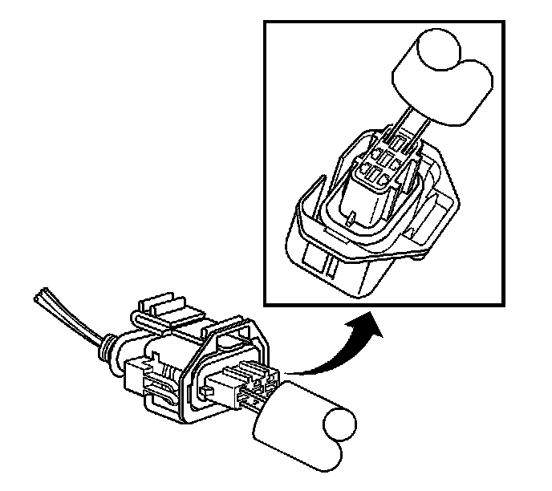

Bosch Connectors (BSK)
BOSCH CONNECTORS (BSK)
TOOLS REQUIRED
J-38125 Terminal Repair Kit
TERMINAL REMOVAL PROCEDURE
1. Disconnect the connector from the component.
2. Remove the wire dress cover, if necessary.
3. Push the wire side of the terminal that is being removed toward the connector and hold it in position.

4. Insert the J 38125-561 tool into the 2 cavities on each side of the terminal at the front of the connector and push until you feel the tool disengage the terminal retainers. See the release tool cross reference in the Reference Guide of the J-38125 to ensure that the correct release tool is used.
5. Carefully pull the terminal out of the connector. Always remember never use force when pulling a terminal out of a connector. If the terminal is difficult to remove, repeat the entire procedure.
TERMINAL REPAIR PROCEDURE
Use the appropriate terminal and follow the instructions in the J-38125.